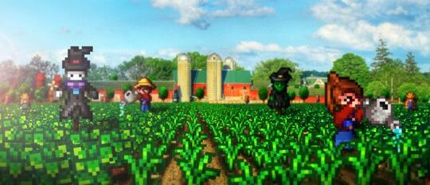

No coração do Vale do Orvalho, o Stardew Café foi criado com a missão de oferecer um espaço acolhedor onde os habitantes da Vila Pelicanos e visitantes pudessem relaxar, compartilhar histórias e desfrutar dos prazeres da vida simples e da natureza.
Fundado por uma família local que sempre sonhou em trazer o espírito do campo para a cidade, o Stardew Café foi construído com materiais colhidos diretamente da fazenda e madeiras da região. O café rapidamente se tornou um ponto de encontro para amigos, vizinhos e aventureiros, onde cada xícara reflete o carinho pela terra.
Desde o início, nosso objetivo foi criar um ambiente que fizesse cada cliente se sentir em casa. As mesas são feitas de madeira local e nossas receitas tradicionais são inspiradas pelos sabores autênticos do Vale do Orvalho.
Missão: Oferecer um espaço que promova a conexão entre as pessoas e a natureza, proporcionando uma experiência única com sabores frescos e um ambiente acolhedor.
Valores: Acreditamos em sustentabilidade, comunidade e simplicidade. Todos os nossos produtos são feitos com ingredientes frescos e orgânicos, diretamente da fazenda, e nossas práticas são focadas no cuidado com o meio ambiente.
Nossa equipe é composta por pessoas apaixonadas por café e pela vida no campo. Cada membro do Stardew Café traz consigo a dedicação em oferecer o melhor atendimento, desde o cultivo dos grãos até o preparo das bebidas. Somos uma pequena família, e isso se reflete na forma como acolhemos nossos clientes.